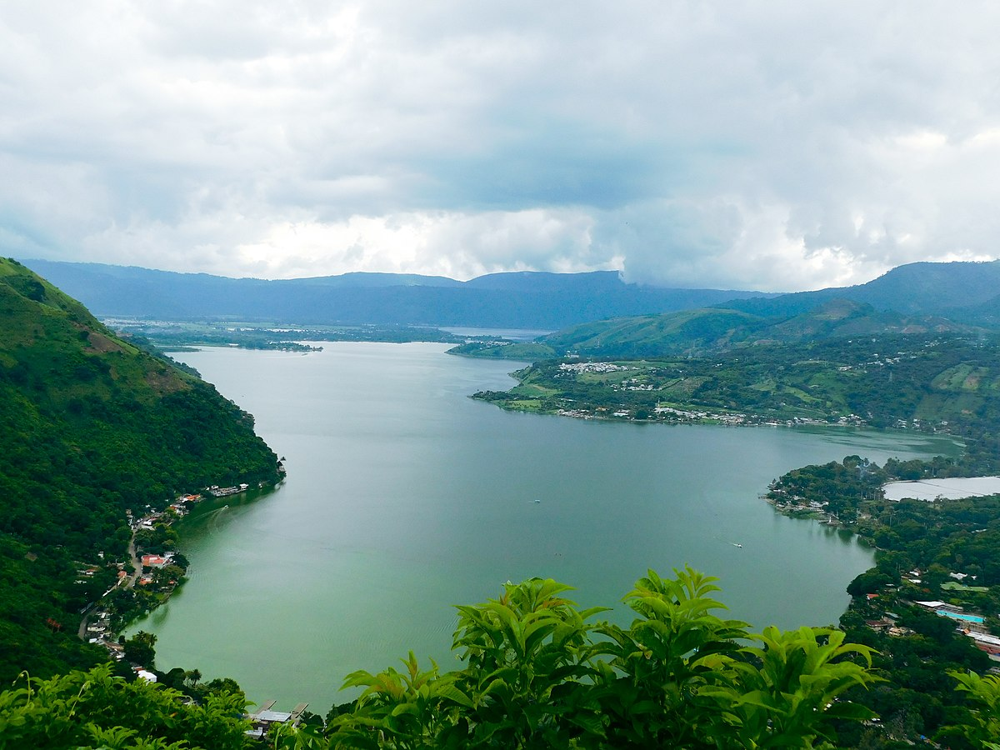

Mas lugares turísticos de Guatemala
Lugares turísticos cerca de la ciudad de Guatemala
° Aguas termales de Amatitlán
Estas aguas son ideales para sentirse en un paraíso natural, ya que vienen de las capas subterráneas de la Tierra.
En Amatitlán encontrarás resorts conocidos por sus piscinas y jacuzzis de aguas termales. Allí, turistas y locales
aprovechan de este regalo de la naturaleza sin tener que moverse lejos del centro urbano. Estos sitios también
cuentan con actividades para niños, así que también puede ser un viaje con toda la familia.
° Parque natural de Calderas
Rumbo al volcán de Pacaya, verás el parque natural de Calderas. Un espacio en donde la naturaleza será el personaje
principal de todas las aventuras que tengas durante tu visita. Este es el escenario para todos los que buscan un lugar
lleno de áreas ecológicas y conectarse con los paisajes propios de Guatemala.
Su mayor atractivo puede ser la laguna, la cual se presta para que hagas actividades como surf de remo o incluso buceo.
Alrededor de la laguna se encuentran varios senderos que puedes caminar y donde descubrirás más sobre la flora del país.
Lo mejor de todo, es que el parque no está tan lejos de la Ciudad de Guatemala.
° San Lucas Sacatepéquez
Desde miradores y parques ecológicos hasta mercados típicos y fincas, San Lucas Sacatepéquez es uno de los municipios
con más lugares turísticos cerca de la capital.
Para pasar un día distinto, puedes ir alguno de los mercados típicos. En San Lucas podrás probar lo mejor de la gastronomía
local, y tal vez quieras visitar alguno de sus parques para entrar en armonía con la naturaleza. Y para cerrar con broche de oro
tu salida, no puedes dejar de pasar al famoso Mirador de San Lucas, para aprovechar de sus vistas increíbles hacia la capital.
° Antigua Guatemala
Moviéndote unos kilómetros al noroeste de la Ciudad, tendrás la oportunidad de visitar lo que fue la antigua capital del país. Esta
ciudad colonial está llena de cultura, historia y gastronomía.
La Antigua es un pueblo para despejarse de la capital sin necesidad de viajar por muchas horas. Aquí te transportarás a la época
de la colonia española gracias a su arquitectura. Con la ayuda de los diferentes restaurantes, locales y actividades que encontrarás
en la Antigua Guatemala, quizá sientas que viajaste a otro mundo sin haberlo notado.

° Lago de Amatitlan
Este es el quinto cuerpo de agua más grande de Guatemala y está rodeado de varios municipios colindantes con la Ciudad de
Guatemala y de Sacatepéquez. Aquí podrás hacer un tour alrededor del lago en bicicleta con tus amigos.
Si lo prefieres, pueden montar a caballo, sacar unas buenas fotos y terminar el día en el mirador. Si lo que buscas es pasar un día
de esparcimiento con tu grupo favorito, visita el Lago de Amatitlán y verás cuán bien la pueden pasar.
